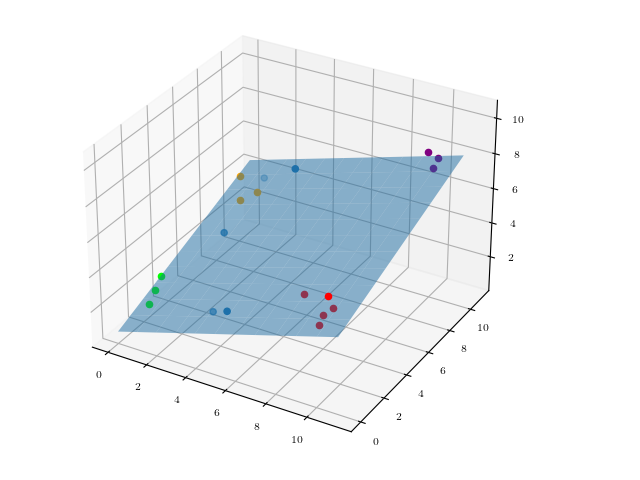

What is Machine Learning
Table of contents
- Key learning outcomes
- ML/LLM Basic
- Relevant Biostatistcs
- Linux: Learn it, Love it
- ML/LLM Training - Image Analysis
Key learning outcomes
In this module we will focus on the basics - how to use linux, basic relevant biostatistical theory (data, statistical approaches, etc), and what machine learning is (and importantly, is not) conceptually.
ML/LLM: The Basics
To be added.
Questions?
- To be added
Conceptual Exercise: PCA
Principle component analysis is a useful technique that allows researchers to visualize high dimensional data in lower space by rotating the axes in such a way that the lower dimensions (or components) maximize the total variance explained. In statistical genetics this involves "rotating" million-dimensional data - something that is very hard to visualize! For this reason, we begin with a simpler exercise. For the following three two dimensional shapes, spend some time identifying the principle components or sketching the line across for which variance is maximized. Check your answers below:
❓QUESTIONS:
What line represents the principle component for the first shape?
What line represents the principle component for the second shape?
What line represents the principle component for the third shape?
Below you can view the shapes in principal component space.

Now that we understand how PCA works in two dimensions we will consider a higher dimensional example. In the three dimensional space below, see if you can visualize a plane that maximizes the variance across two dimensions:

Did you get it right? If so, realize that this is equivalent to what we do in genetics - we find rotate the data through millions of dimensions of space to find the plane that maximizes the variance in two dimensions:

To run PCA with real data please enter the exercise3 directory, and type the following command to run PCA on the 1000 Genome data:
./code/plink --bfile data/chr1-22 --indep-pairwise 250 25 0.1 --maf 0.1 --threads 30 --out chr1-22.ldpruned_all_1kgv2
./code/plink --bfile data/chr1-22 --extract chr1-22.ldpruned_all_1kgv2.prune.in --pca --threads 30
This will generate the principal components that maximize the variance in the data. To plot the result run the following commands from with an R-terminal:
R-Code: Generate a PCA Plot
require('RColorBrewer')
options(scipen=100, digits=3)
eigenvec <- read.table('plink.eigenvec', header = F, skip=0, sep = ' ')
rownames(eigenvec) <- eigenvec[,2]
eigenvec <- eigenvec[,3:ncol(eigenvec)]
colnames(eigenvec) <- paste('Principal Component ', c(1:20), sep = '')
PED <- read.table("data/all_phase3.king.psam", header = TRUE, skip = 0, sep = '\t')
PED <- PED[which(PED$IID %in% rownames(eigenvec)), ]
PED <- PED[match(rownames(eigenvec), PED$IID),]
PED$Population <- factor(PED$Population, levels=c("ACB","ASW","ESN","GWD","LWK","MSL","YRI","CLM","MXL","PEL","PUR","CDX","CHB","CHS","JPT","KHV","CEU","FIN","GBR","IBS","TSI","BEB","GIH","ITU","PJL","STU"))
col <- colorRampPalette(c("yellow","yellow","yellow","yellow","yellow","yellow","yellow","forestgreen","forestgreen","forestgreen","forestgreen","grey","grey","grey","grey","grey",
"royalblue","royalblue","royalblue","royalblue","royalblue","black","black","black","black","black"))(length(unique(PED$Population)))[factor(PED$Population)]
project.pca <- eigenvec
par(mar = c(5,5,5,5), cex = 2.0,cex.main = 7, cex.axis = 2.75, cex.lab = 2.75, mfrow = c(1,2))
plot(project.pca[,1], project.pca[,2],
type = 'n',
main = 'A',
adj = 0.5,
xlab = 'First component',
ylab = 'Second component',
font = 2,
font.lab = 2)
points(project.pca[,1], project.pca[,2], col = col, pch = 20, cex = 2.25)
legend('bottomright',
bty = 'n',
cex = 3.0,
title = '',
c('AFR', 'AMR', 'EAS',
'EUR', 'SAS'),
fill = c('yellow', 'forestgreen', 'grey', 'royalblue', 'black'))
plot(project.pca[,1], project.pca[,3],
type="n",
main="B",
adj=0.5,
xlab="First component",
ylab="Third component",
font=2,
font.lab=2)
points(project.pca[,1], project.pca[,3], col=col, pch=20, cex=2.25)
❓QUESTIONS:
What is distinct about the PC projections of the AMR group relative to other populations?
Why does this occur? What does it tell us about ancestry of this group?
Basic Biostats
To be added
Questions?
- To be added Back to table of contents
Linux Primer
To be added
Questions?
- To be added Back to table of contents
ML/LLM Training
To be added
Questions?
- To be added Back to table of contents